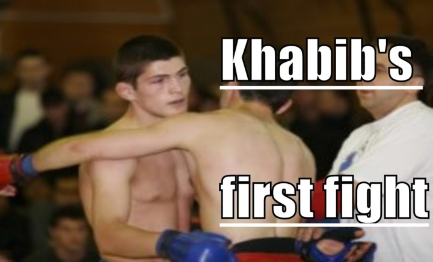

- de Pankration Atrium Cup in 2008 
- hij won de gouden medaille op de World Combat Sambo Championships in 2009
- Hij won in hetzelfde jaar ook de gouden medaille op de Russische Combat Sambo-kampioenschappen
- Gouden medaille op de Wereldkampioenschappen Combat Sambo (82 kg) en
zilveren medaille op de Wereldbeker in Combat Sambo (82 kg) - in 2012 won hij twee titels; Hij was de No-Gi Expert weltergewichtkampioen voor mannen en
de ADCC Rules No-Gi Expert welterweight Champion. - in 2013 won hij de Staredown of the Year 2013 van Fightbooth.com. verder won hij de Breakthrough Fighter of the Year 2013.
- in 2016 won hij de titel 'Comeback Fighter of the Year'. In hetzelfde jaar won hij de titel International Fighter of the Year bij de World MMA Awards.
- the eagle heeft een record neergezet van 21 takedowns in 28 wedstrijden, dit is het hoogste aantal van heel de wereld.